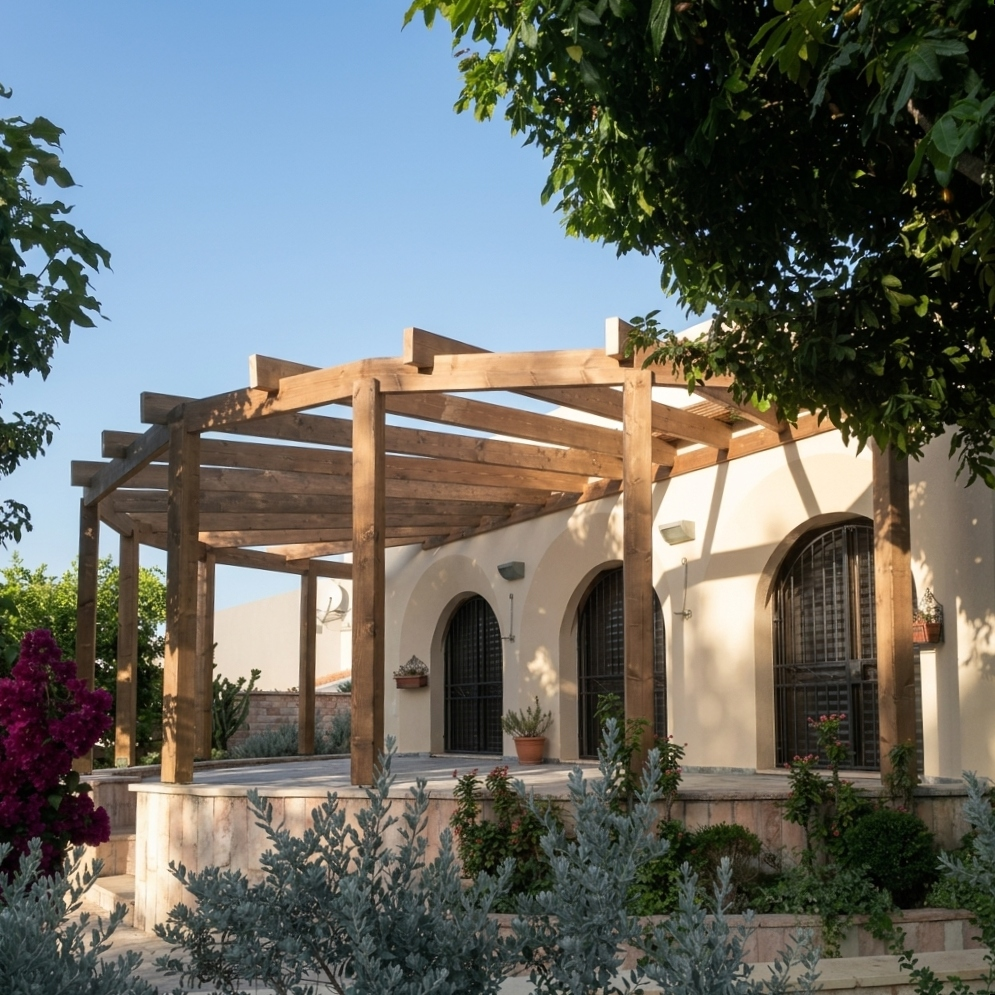

באים בטוב · pergola-sukkot · ריצה 1 · 2026-09-28
ערכת עלייה: פרגולות אחרי סוכות
דף הנחיתה מוכן, וכל מודעה בריצה הבאה תפנה אליו. הדף עולה לאוויר רק כשנימרוד מעתיק אותו לריפו של האתר.
קופי ✓
דף נחיתה ✓
שלבים 2 ו-3 דולגו לפי הבריף
עוד לא באוויר

הסוכה צריכה להחזיק שבוע. פרגולה צריכה לעבור חורף.
באים בטוב מתכננים ובונים פרגולות עץ לבתים פרטיים, מהמדידה ועד המסירה.
להעלות את הדף
- להעתיק את כל התיקייה, כולל
assets/: C:\Users\nimro\OneDrive\שולחן העבודה\claude prog\marketing team\output\baimbetov\landing\2026-09-28-pergola-sukkot-run1\ אל: C:\my projects\baimbetov\pergola\ אתconfig.jsonלא צריך להעתיק. הוא רשומה פנימית של המנוע. - לבדוק מקומית ב-
index.htmlשהדף נראה תקין. הטופס לא ישלח מקובץ מקומי, וזה צפוי. - push ל-
main. הדף עולה ל-baimbetov.me/pergola/.
בדיקה אחת אחרי העלייה
- לפתוח בטלפון: https://baimbetov.me/pergola/?utm_source=pergola-sukkot
- לשלוח ליד בדיקה מהטופס.
- באיירטייבל, "באים בטוב - CRM": לוודא שנכנסו סוג פרויקט = פרגולה, ה-UTM, ו"דף מקור" =
/pergola/. - ללחוץ על כפתור הוואטסאפ, ולוודא שנפתחת ההודעה "היי! אני פונה מדף הפרגולות ואשמח לשמוע עוד".
הליד יירשם עם "מקור: אתר", כי נקודת הקצה כותבת תמיד את הערך הזה. את הקמפיין מזהים לפי ה-UTM ו"דף מקור".
תשעת ההוקים המאושרים, לריצה 2
ההוקים מועתקים מקובץ הקופי כמו שהם, בשביל המודעות. הפלטפורמה והתקציב עוד לא הוכרעו.
זווית 1 · כל התהליך במקום אחד
- פירקתם את הסוכה. לפרגולה לא תצטרכו לתאם מתכנן, מהנדס ונגר.
- הסוכה עמדה שבוע. פרגולה צריכה תכנון, חישוב וביצוע. אצלנו שלושתם בכתובת אחת.
- את הסוכה הקמתם בערב אחד, לבד. את הפרגולה נתכנן ונבנה אנחנו, מהמדידה ועד המסירה.
זווית 2 · הליווי והפיקוח שלנו
- פירקתם את הסוכה. את הפרגולה נבנה בלי שתצטרכו לרדוף אחרי אף אחד.
- הסוכה ירדה. אנחנו באים למדוד, ונשארים בשטח עד הבורג האחרון.
- הסוכה צריכה להחזיק שבוע. פרגולה צריכה לעבור חורף.
זווית 3 · שקיפות
- הסוכה ירדה. לפני שמנסרים קורה אחת לפרגולה, תדעו בדיוק מה נבנה.
- פירקתם את הסוכה? הצעת המחיר לפרגולה תגיע אליכם מפורטת, סעיף אחרי סעיף.
- אחרי הסוכה באה הפרגולה. כמה זמן תיקח העבודה, תדעו עוד לפני שמתחילים.
מה לא נכנס לשום מודעה ולשום תשובה
- מחיר, ו"החל מ-".
- "נוציא לכם היתר". מותר רק "מלווים אתכם בבירור".
- אחריות לכמה שנים, או מחיר סגור.
- הבטחה לזמן תגובה, וגם לא "נחזור אליכם עד סוף יום העבודה".
- הנחה, מבצע, או "רק השבוע". "אחרי סוכות" מותר, כי זה לוח שנה אמיתי.
- דקים ומבני עץ אחרים. הקמפיין מדבר רק על פרגולות.
- ביקורות וציטוטים של לקוחות. עוד אין כאלה.
לפני שמודעה עולה
- לבחור פלטפורמה ותקציב: מטא, גוגל או שניהם.
- להתקין את פיקסל מטא ו-GA4, ויחד איתם באנר קוקיז ועדכון למדיניות הפרטיות.
- כל מודעה נוצרת במצב PAUSED. את ההפעלה עושים ידנית.